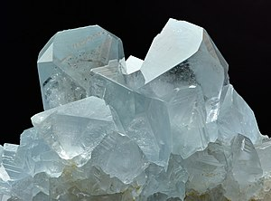

Main Page
From today's featured article
{kind=link}
RoboCop is a 1987 American science fiction action film directed by Paul Verhoeven and written by Edward Neumeier and Michael Miner. Set in a crime-ridden Detroit in the near future, it centers on police officer Alex Murphy, played by Peter Weller (pictured), who is murdered by a gang of criminals and revived by the megacorporation Omni Consumer Products as a cyborg. The director emphasized violence throughout the film, making it so outlandish that it became comical. RoboCop was a financial success upon its release in July 1987, earning $53.4 million. Reviewers praised it as a clever action film with deeper philosophical messages and satire, but were conflicted about the violence. The film won the Academy Award for Best Sound Editing. RoboCop has been critically reevaluated since its release and hailed as one of the best films of the 1980s for its depiction of a cyborg coming to terms with the lingering fragments of its humanity. (Full article...)
Did you know ...
.jpg){kind=link}
- ... that the Isle of Dogs Pumping Station (pictured) was nicknamed the Temple of Storms?
- ... that 16th-century chroniclers thought María Pacheco, a leader of the Revolt of the Comuneros, was a witch?
- ... that some critics described the fourth season of Last Week Tonight with John Oliver as comic relief from the activities of the Trump administration?
- ... that in order to re-marry, Zhou Wennan had to request Mao Zedong's permission?
- ... that schoolchildren in the town of Kirkby were paid 25 pence an hour to help build Kirkby Ski Slope, even though the slope never opened?
- ... that Lois E. Trott ran the first lodging house for homeless girls in America, providing shelter and support for over 1,000 girls annually, all without receiving any payment?
- ... that Jerzy Kosinski: A Biography described its subject as a "liar", and yet, one reviewer felt that the author's "studiously neutral position ends up sounding like an apologia for Kosinski"?
- ... that "Chihiro" by Billie Eilish was titled in reference to the main character of Spirited Away?
- ... that the DJ NewJeansNim has been credited with reviving interest in Buddhism among South Korean youths?
In the news
.jpg){kind=link}
- The Labour Party wins the United Kingdom general election and Keir Starmer (pictured) becomes prime minister.
- Hurricane Beryl, the earliest-recorded Category 5 Atlantic hurricane, leaves at least 12 people dead in the Caribbean and Venezuela.
- In the Netherlands, a new cabinet is sworn in, with Dick Schoof serving as the prime minister.
- A stampede during a religious event in Uttar Pradesh, India, leaves at least 120 people dead.
On this day
July 8: Islamic New Year (2024, 1446 AH)
{kind=link}
- 1663 – Baptist minister John Clarke (pictured) was granted the Rhode Island Royal Charter, described as the "grandest instrument of human liberty ever constructed".
- 1874 – Members of the North-West Mounted Police at Fort Dufferin began their March West, their first journey to the Canadian Prairies.
- 1947 – Following reports of the capture of a "flying disc" by U.S. Army Air Forces personnel near Roswell, New Mexico, the military stated that the crashed object was a conventional weather balloon.
- 1966 – King Mwambutsa IV of Burundi was deposed in a coup d'état by his son, Prince Charles Ndizi.
- 2014 – German citizen Lars Mittank disappeared from Varna Airport, Bulgaria; his last known movements were widely watched on YouTube.
- Ælfwynn (d. 983)
- Giorgio Pullicino (b. 1779)
- Yarden Gerbi (b. 1989)
- Tom Veryzer (d. 2014)
From today's featured list
{kind=link}
There have been 50 chief justices of India since the Supreme Court of India superseded the Federal Court of India in 1950. The chief justice of India is the highest-ranking officer of the Indian judiciary and the chief judge of the Supreme Court, in which role the chief justice is responsible for the allocation of cases and appointment of constitutional benches which deal with important matters of law. Yeshwant Vishnu Chandrachud, the 16th chief justice, is the longest-serving holder of the post, serving for more than seven years from 1978 to 1985, while Kamal Narain Singh, the 22nd chief justice, is the shortest-serving, in office for 17 days in 1991. As of 2024, no woman has served as chief justice. The incumbent and 50th chief justice is Dhananjaya Y. Chandrachud (pictured), who assumed office on 9 November 2022. (Full list...)
Today's featured picture
|  |
Celestine is a mineral consisting of strontium sulfate (SrSO4). It is named for its occasional delicate blue color. Celestine and the carbonate mineral strontianite are the principal sources of the element strontium, commonly used in fireworks and in various metal alloys. The mineral occurs as crystals, and also in compact massive, and fibrous forms. It is found worldwide, mostly found in sedimentary rocks, usually in small quantities. Pale blue crystal specimens, as shown in this photograph, are found in Madagascar. Photograph credit: Ivar Leidus
Recently featured:
|
{kind=link}
Other areas of Wikipedia
- Community portal – The central hub for editors, with resources, links, tasks, and announcements.
- Village pump – Forum for discussions about Wikipedia itself, including policies and technical issues.
- Site news – Sources of news about Wikipedia and the broader Wikimedia movement.
- Teahouse – Ask basic questions about using or editing Wikipedia.
- Help desk – Ask questions about using or editing Wikipedia.
- Reference desk – Ask research questions about encyclopedic topics.
- Content portals – A unique way to navigate the encyclopedia.
Wikipedia's sister projects
Wikipedia is written by volunteer editors and hosted by the Wikimedia Foundation, a non-profit organization that also hosts a range of other volunteer projects:
-
Commons
Free media repository -
MediaWiki
Wiki software development -
Meta-Wiki
Wikimedia project coordination -
Wikibooks
Free textbooks and manuals -
 Wikidata
Wikidata
Free knowledge base -
Wikinews
Free-content news -
Wikiquote
Collection of quotations -
Wikisource
Free-content library -
Wikispecies
Directory of species -
Wikiversity
Free learning tools -
Wikivoyage
Free travel guide -
 Wiktionary
Wiktionary
Dictionary and thesaurus
Wikipedia languages
This Wikipedia is written in English. Many other Wikipedias are available; some of the largest are listed below.
-
1,000,000+ articles
-
250,000+ articles
-
50,000+ articles